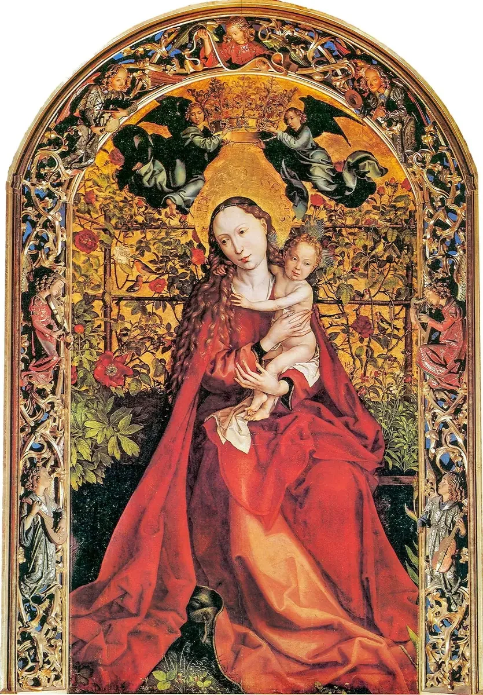
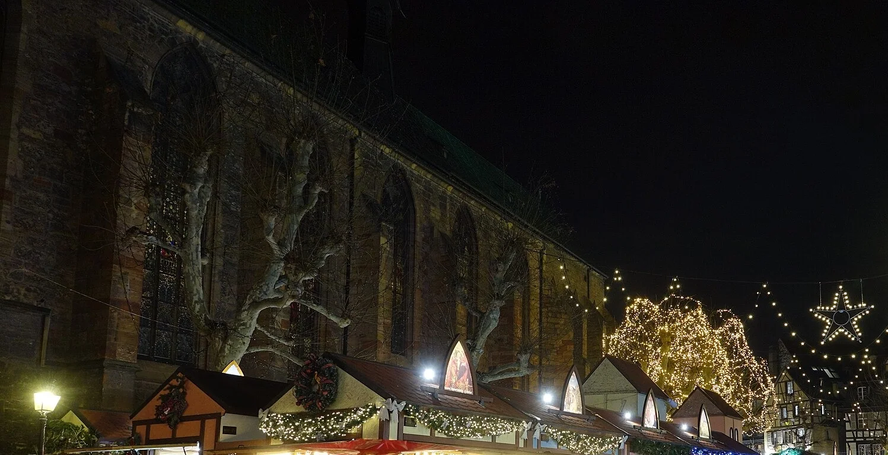
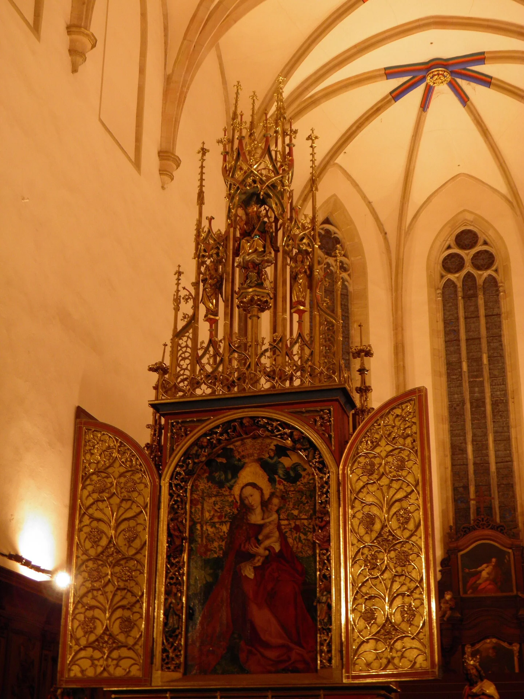
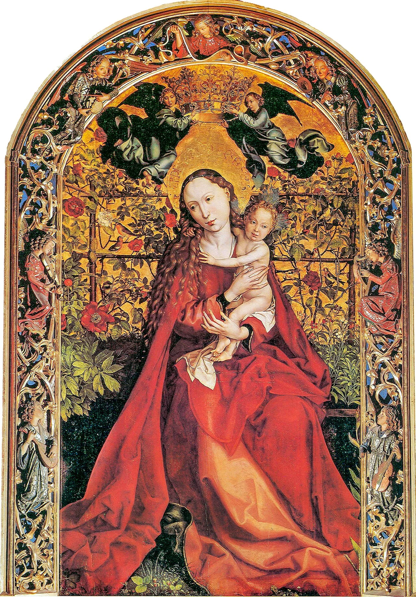
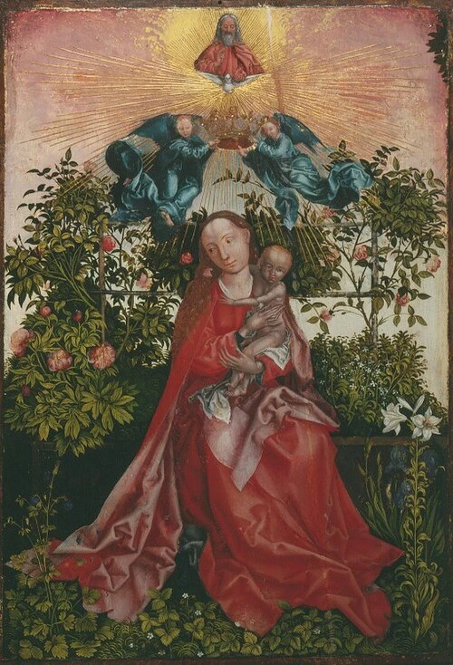

아직 펼치지 않은 카드아기 예수의 장터 · 2콜마르 성탄 시장과 「장미 정원의 성모」알자스의 작은 도시 콜마르는 성탄이 되면 장터 여섯 곳으로 가득 차요. 그 장터 바로 옆 성당에는 한때 도둑맞았던 그림이 있어요. 어떤 그림일까요?장터 옆 성당에 도둑맞았다 돌아온 그림이 있대!
1473년 · 오늘프랑스 콜마르 · 도미니코회 성당
콜마르 성탄 시장과 「장미 정원의 성모」
프랑스 알자스의 작은 도시 콜마르. 성탄 장터가 선 광장 바로 옆 성당에 1473년에 그린 「장미 정원의 성모」가 있어요. 장미 덩굴 속에 숨은 흰 장미와 새, 딸기와 옛 글씨를 하나씩 찾아보세요.
콜마르라는 도시의 성탄 장터 옆 성당에 아주 오래된 그림이 있어. 장미 덩굴 속에 숨은 새랑 꽃을 같이 찾아볼까?
검수 전 시안이에요(기준서 2판). 장면에는 기록과 연구 자료에 있는 것만 옮겼고, 풀이는 누가 그렇게 보는지 밝혔어요. 상상은 ‘눈 감고 상상해 보기’에만 썼어요.
시안 확인용카드 단계 미리 보기
1
장터 곁의 높은 창
알자스의 작은 도시 콜마르는 성탄이 되면 구시가 곳곳에 장터 여섯 곳이 서요. 도미니코회 광장에는 작은 나무 가게가 60채쯤 서고, 트리에 달 장식을 팔아요.
그 광장을 내려다보는 것이 도미니코회 성당이에요. 밤이면 14세기 색유리창에 불이 들어와요.

가게 사이를 몇 걸음 지나 성당 문을 열면, 장터 바로 곁에 그림 한 점이 기다려요.
콜마르라는 도시의 성탄 장터야. 장터 바로 옆에 커다란 성당이 있어.
물어보기장터 옆 성당 안에는 무엇이 있을까?
2
1473년, 단 하나의 날짜
성가대석 제단에 금빛 날개를 활짝 편 틀이 서 있고, 그 한가운데에 높이 2m쯤 되는 그림이 있어요. 마르틴 숀가우어가 1473년에 그린 「장미 정원의 성모」예요. 숀가우어가 나무판에 그린 그림 가운데 그린 해가 알려진 것은 이 그림 하나뿐이에요.
숀가우어는 1445년 무렵 콜마르의 금세공인 집안에서 태어났어요. 무엇보다 동판화로 이름났고, 서명을 넣은 판화 116점을 남겼어요.

그림은 처음에 콜마르 성 마르탱 성당의 제단을 위해 그렸어요. 1972년 1월 11일 그곳에서 도둑맞았다가, 1973년 6월 4일 리옹 근처 데신에서 되찾았어요. 도둑은 끝내 밝혀지지 않았어요.
그림이 돌아오자 성대한 감사 미사가 열렸고, 성당이 사람들로 가득 찼다고 해요. 그 뒤 그림은 이곳 도미니코회 성당으로 옮겨 왔어요.
어른 키보다 큰 그림이야. 도둑맞았다가 1년 반 만에 돌아왔대.
물어보기잃어버렸던 소중한 것이 돌아오면 어떤 마음이 들까?
3
장미 정원에 숨은 것들
그림 앞에 바짝 다가가 봐요. 성모는 붉은 옷을 입고 아기 예수를 안은 채, 장미 덩굴이 둘러싼 정원에 앉아 있어요. 위에서는 두 천사가 커다란 관을 들어 올려요.
루브르 박물관은 이 그림의 꽃과 금빛, 보석과 새들이 신비 시인들이 노래한 ‘낙원의 정원’을 닮았다고 소개해요. 아래 그림에서 숨은 것을 하나씩 눌러 찾아보세요.
그림 속 숫자를 하나씩 눌러, 장미 정원에 숨은 것을 찾아보세요. ‘가까이 보기’로 크게 볼 수 있어요.

마르틴 숀가우어, 「장미 정원의 성모」, 1473년 · 둘레의 조각 틀은 20세기에 더한 것 · 그림: 마르틴 숀가우어 · 조각 틀: 자크 알프레드 클렘 · 퍼블릭 도메인 · 위키미디어 공용
그림 위의 숫자나 아래 번호를 눌러 보세요.
여섯 곳을 다 찾았어요. 한 걸음 물러나 그림 전체를 다시 보세요.
한 연구자는 덩굴 속에 노래하는 새가 여덟 마리 숨어 있다고 세었어요. 몇 마리나 찾았나요?
그림 속에 숨은 것을 찾아보자! 새, 꽃, 천사, 딸기까지 있어.
물어보기새를 몇 마리나 찾았어?
4
잘려 나간 하늘
이 그림은 처음보다 작아요. 언제인지는 모르지만 네 가장자리가 모두 잘려 나갔어요. 처음 모습은 16세기 중엽에 따라 그린 작은 사본(높이 44cm)으로 알 수 있어요. 이 사본은 지금 미국 보스턴의 이저벨라 스튜어트 가드너 미술관에 있어요.
사본에는 오늘 그림에 없는 것이 있어요. 맨 위에서 하나님 아버지와 비둘기(성령)가 빛을 내려보내고, 오른쪽에는 흰 백합과 붓꽃이 피어 있어요. 위의 단추로 사본과 오늘의 그림을 바꿔 보세요.

오늘 그림의 가장자리에는 잘리다 남은 붓꽃 반쪽과 매발톱꽃 잎 하나가 있다고 해요. 성모의 옷자락 끝과 발치의 딸기밭도 많이 사라졌어요.
옛날에 똑같이 따라 그린 그림이 있어. 거기엔 맨 위에 하나님과 비둘기가 있어!
물어보기잘려서 없어진 부분에는 또 무엇이 있었을까?
눈 감고 상상해 보기
눈을 감아 보세요. 바깥 장터에서는 아이들 웃음소리와 가게 사람들의 부르는 소리가 들려요. 성당 문이 닫히자 소리가 멀어지고, 높은 창으로 들어온 빛이 금빛 바탕 위에서 흔들려요. 장미 덩굴 사이의 작은 새 한 마리가 금방이라도 날아오를 것 같아요.
눈을 감아 봐. 밖에서는 장터 소리가 왁자지껄. 성당 안은 조용하고, 그림 속 새가 날개를 파닥일 것 같아!
나의 자리
처음 본 그 그림을 다시 보세요. 흰 장미 한 송이, 얼굴 빨간 새, 발치의 딸기가 이제 보이나요?
후광의 글에서 꽃은 ‘저도 꺾어 주세요’ 하고 말해요. 이 정원의 꽃과 새 가운데, 나는 무엇이 되어 아기 곁에 있고 싶나요?
이 그림 속 정원에 들어간다면, 너는 무슨 꽃이나 새가 되고 싶어?
마음에 닿는 한 줄을 고르거나 직접 써 보세요. 한 줄을 남기면 이 자리의 도장이 찍혀요. 이 기기에만 저장돼요.
더 깊이
궁금한 칸만 펼쳐 읽어도 괜찮아요.
알고 보면
마르틴 숀가우어 1445년 무렵 콜마르에서 태어나 1491년에 세상을 떠났어요. 금세공인 집안은 바이에른 남쪽 숀가우에서 왔고, 아버지는 아우크스부르크를 거쳐 1440년 콜마르에 자리 잡았어요. 다섯 아들 가운데 셋은 금세공인, 루트비히와 마르틴은 화가가 되었어요.
닫힌 정원 울타리로 둘러싸인 정원에 앉은 성모예요. 루브르 박물관은 이 그림을 라인강 지역 사람들이 마음에 그린 ‘닫힌 정원’, 곧 낙원의 상징을 비추는 거울로 소개해요.
보스턴의 사본 높이 44cm쯤 되는 작은 사본이에요. 1899년 이저벨라 스튜어트 가드너가 런던의 화상에게서 사들였어요. 슈마허볼프가르텐은 이 사본에 금빛 바탕도, 새도 없다고 적었어요.
2026년 봄 그림은 3월에 도미니코회 성당 제단 위에서 사람들이 보는 가운데 열흘쯤 손질을 받았어요. 들뜬 물감을 아주 묽은 철갑상어 아교로 붙이고, 니스 위에 낀 잿빛 막을 닦아 냈어요. 그 뒤 4월 8일~7월 20일 파리 루브르 박물관의 숀가우어 전시에 나갔어요.
기록마다 다른 점
왜 잘렸나 2026년 복원 소식을 전한 AFP 기사는 그림이 아마 떨어지며 상했을 것이라고 전해요. 스마트히스토리와 슈마허볼프가르텐은 나중에 만든 틀에 맞추려고 잘랐다고 봐요. 언제 잘렸는지는 알려져 있지 않아요.
처음 크기 슈마허볼프가르텐은 처음 크기를 약 250×160cm로 적었고, 영어 위키백과는 약 250×165cm로 적어요. 지금은 200×115cm쯤이에요.
사본은 언제 가드너 미술관은 16세기 중엽, 1974년 미술관 도록은 16세기 전반, 슈마허볼프가르텐은 1540년 무렵으로 보았어요.
후광의 글 1901년 뒤러 협회는 “tu quoque”로, 슈마허볼프가르텐은 “tu que”로, 2001년 하인리히스슈라이버의 강연은 줄임표를 살려 “tuq(ue)”로 옮겨 적었어요. 글자 일부가 지워져 읽는 법이 조금씩 달라요.
지금 있는 곳 프랑스 문화부 문화재 목록(팔리시)은 아직 성 마르탱 성당 성가대석으로 적고 있지만, 운터린덴 미술관 안내는 성 마르탱 교구의 그림을 도미니코회 성당에 걸어 둔다고 적어요.
직접 가 보기
확인한 날 · 2026년 11월 18일 · 바뀌기 쉬운 정보라 정기적으로 다시 확인해요
도미니코회 성당은 콜마르 구시가의 도미니코회 광장에 있어요. 2026년 콜마르 성탄 장터는 11월 23일부터 12월 29일까지예요(콜마르 성탄 공식 누리집).
AFP는 루브르 전시 때문에 그림이 넉 달 동안 자리를 비운다고 전했어요. 가시기 전에 그림이 성당에 걸려 있는지, 여는 시간·요금과 함께 콜마르 관광청에서 확인해 주세요.
숨은 것 다 찾기 금박
흰 장미부터 그림틀의 천사까지, 그림 속 여섯 곳을 모두 찾아 읽으면 카드에 금박이 입혀져요.
흰 장미 · 후광의 글 · 얼굴 빨간 새 · 작약 · 딸기 · 그림틀 천사 찾기
함께 새 세기 채색
아이와 함께 ‘영화처럼 보기’를 끝까지 보며, 덩굴 속 새를 같이 세어 보세요. 끝까지 보면 카드가 채색돼요.
아이와 함께 ‘영화처럼 보기’를 끝까지 보기
근거 보기 (13)
- AFP 기사(알레테이아, 2026.3.6): 콜마르에서 공개 복원 — 높이 2m·너비 1.15m, 숀가우어가 날짜를 적은 유일한 판 그림, 처음엔 더 컸음(위쪽 하나님과 비둘기·옷자락 끝·딸기밭 사라짐), 아마 떨어지며 상함, 복원 방법과 열흘, 1972년 도난·1년쯤 뒤 리옹 근처에서 찾음·도둑 못 찾음·감사 미사, 루브르 전시와 넉 달의 빈자리
- 프랑스 문화부 팔리시 PM68000050 — 1473년, 높이 200, 1972.1.11 도난·1973.6.4 데신에서 찾음, 1978.7.11 문화재 지정, 목록상 자리 성 마르탱 성당
- 운터린덴 미술관: 마르틴 숀가우어 안내(영어 PDF) — 1445년 무렵 콜마르, 숀가우 출신 금세공 집안, 1440년, 다섯 아들, 판화 116점(모두 서명), 성 마르탱 교구의 그림을 도미니코회 성당에 전시
- 루브르 박물관: 「마르틴 숀가우어, 아름다운 불멸」 전시(2026.4.8~7.20)와 강연 안내 — 1473년 콜마르, 꽃·금빛·보석·새, 낙원의 정원, 닫힌 정원
- 이저벨라 스튜어트 가드너 미술관: 「장미 정원의 성모와 아기」 사본 — 16세기 중엽, 44.3×30.5cm, 1899년 구입, 1974년 도록의 연대
- 스마트히스토리(Beth Harris · Steven Zucker): 숀가우어 「장미 정원의 성모」 — 관을 든 천사, 딸기, 황금방울새와 고난, 사본의 하나님과 비둘기, 나중에 만든 틀
- 레나테 슈마허볼프가르텐, 「‘숀가우어를 따라’ 그린 장미 정원의 성모」(Freiburger Diözesan-Archiv 120) — 200×115.3cm, 흰 장미 한 송이와 성모의 손, 후광의 글, 새 여덟 마리, 처음 크기, 사라진 것, 남은 붓꽃 반쪽·매발톱꽃 잎, 사본의 금빛 바탕·새 없음
- 울리케 하인리히스슈라이버 강연(2001, 오버라인 향토 연구회 402회) — 후광의 글, 하나뿐인 흰 장미, 작약 밑그림(게티 미술관), 아래 가장자리의 딸기, 사본의 백합과 붓꽃
- 뒤러 협회 1901(하이델베르크 대학 도서관 디지털판) — 후광 글 옮겨 적기와 영어 뜻, 꽃들을 가리킴, 처음엔 훨씬 컸음
- 알자스 인물 사전: 자크 알프레드 클렘(1872~1948) — 악기 연주 천사들을 새긴 조각 틀
- 콜마르 성탄 공식 누리집: 여섯 장터 — 도미니코회 광장의 나무 가게 60채쯤, 트리 장식, 밤에 불이 들어오는 14세기 색유리창
- 콜마르 성탄 공식 누리집: 날짜와 시간 — 2026년 11월 23일~12월 29일
- 위키미디어 공용: 그림과 사본, 성당 안팎 사진의 파일 정보
그림·사진·소리 출처
‘처음 만나는 기독교 문화’의 깊은 카드예요. 카드 단계와 남긴 글은 이 기기에만 저장돼요.